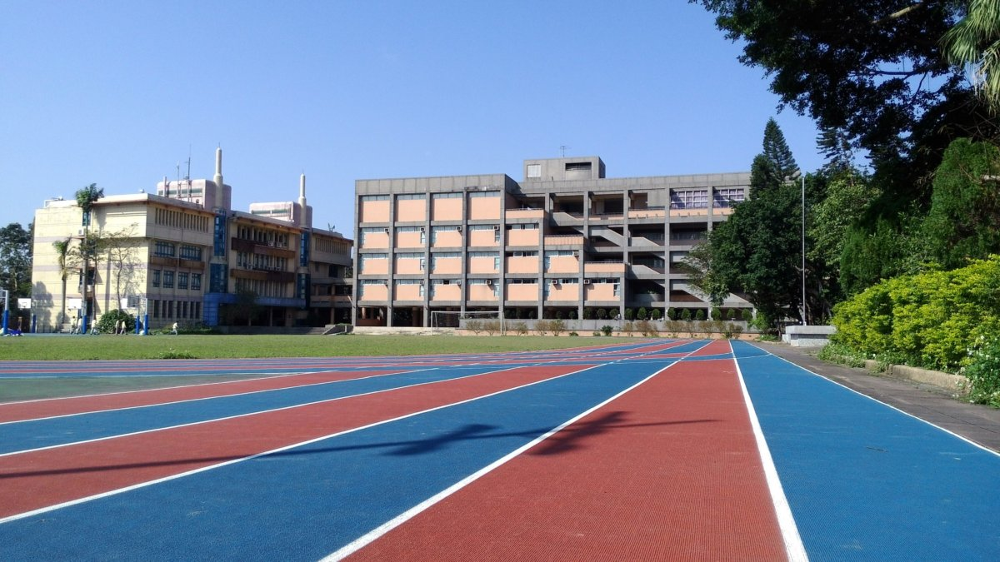

大直高中
本校於民國53年就臺灣省訓團舊址設立而成，為男女合校之初級中學；57年實施九年國民義務教育，專收男生；80學年度起，男女學生兼收。87學年度，改制為完全中學至今。國中時期好比北冥之鯤，為臺北市明星國中之一，改制後乘著波濤洶湧的教育改革浪潮，順勢蛻變為凌雲九霄的大鵬鳥，成為新世紀新高中。
本校教學設施完善，田字形教室書香古樸，校門與穿堂氣度非凡。除普通教室外，更擁有兩棟專科教室大樓--迎曦館及科學館。迎曦館內設有一般專科教室，如：美術、舞蹈、輔導、家政、以及視聽教室等。為配合資訊時代的需求，館內另設有電腦及遠距教室。科學館內則設置有自然科實驗室、專題研究室、音樂、童軍、表演藝術教室等。
校內師生共同票選「大直八景」，其中以「荷池映綠」最具特色。荷花池為一多元風貌生態池，曾獲臺北市文化局公共藝術巡迴展推薦作品、文建會93年公共藝術代表作之一。此項作品以陶土燒製十餘隻或高或低的「心靈之鳥」，佇立在漂流木上隨池水晃動，成為引人注目的視覺焦點。另搭配木板鋪設環湖的散步曲徑，創造出生態與藝術的豐富對話，及校園藝術的獨特風味，令人流連駐足。

校徽由來
《莊子‧逍遙遊》中，曾提及一則寓言，說到北冥有隻鯤魚，當牠順勢蛻變成大鵬鳥時，能夠振其宛若天邊雲彩般的巨翅，鼓動海風，水擊三千里，順著風飛上九萬里之雲霄，以達到極遠的南冥。無論是鯤或鵬的悠然自適，皆能各順勢其性，以達到逍遙的境界。以前的大直國中，便如那鯤魚，披戴明星國中的美譽，悠遊在社會的讚譽聲中，怡然逍遙；當羽化為鵬，成為今日大直高中時，亦當在此片教育改革之聲浪中，引領著高中教育的發展方向。如今大直高中將透過人文、藝術，以及科技的形象，化為鳶羽，騰飛於八荒九垓之遙，翱翔於藍天之中。